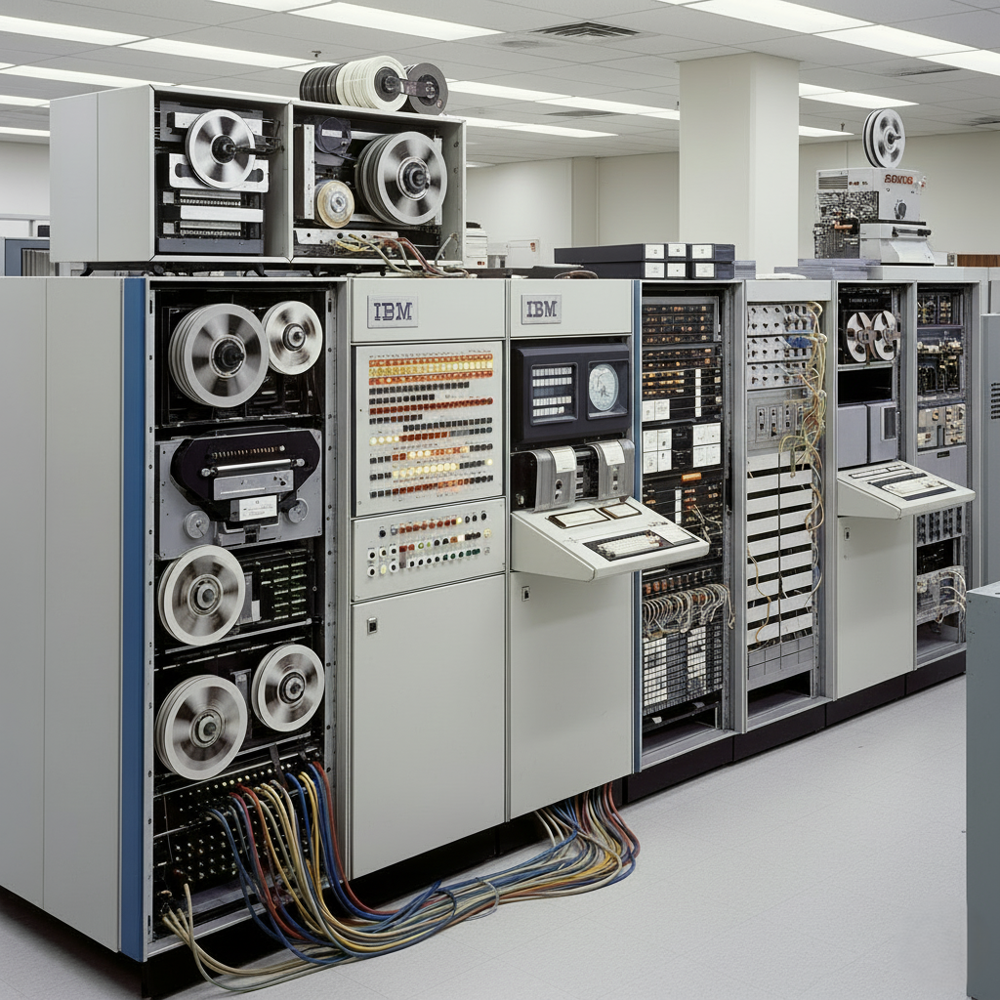
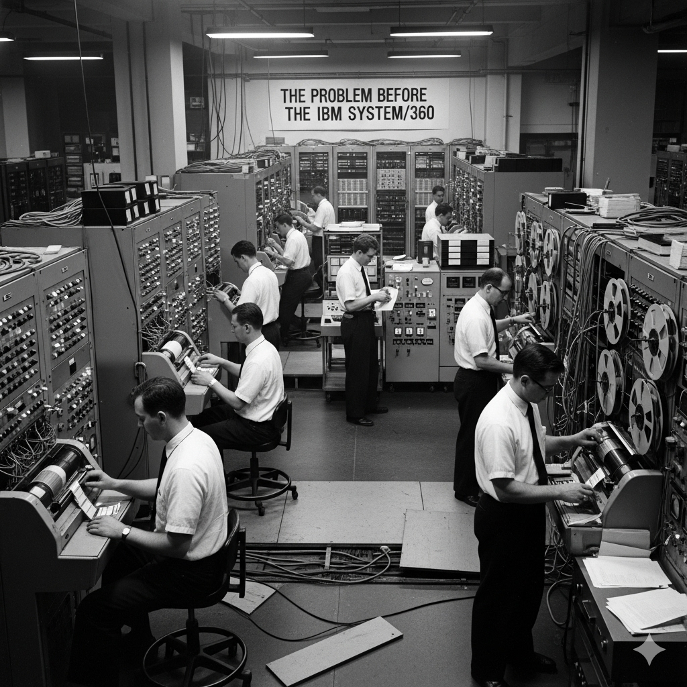
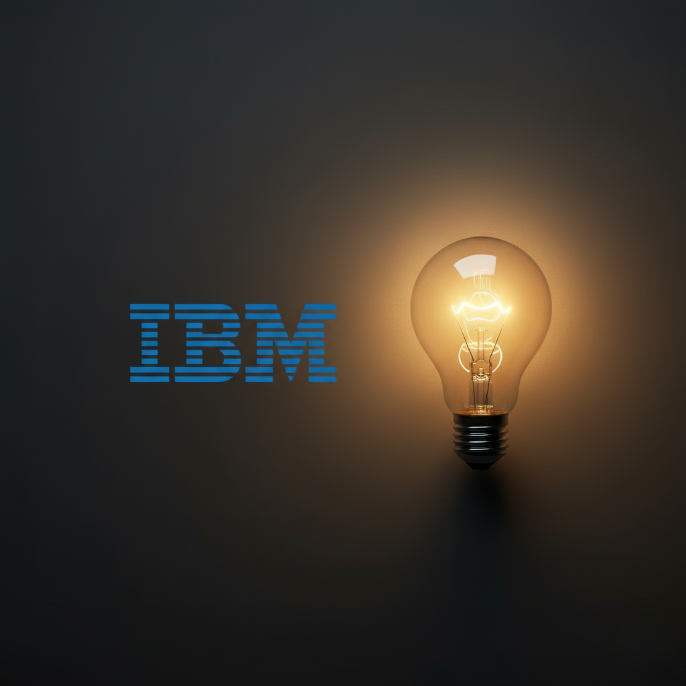
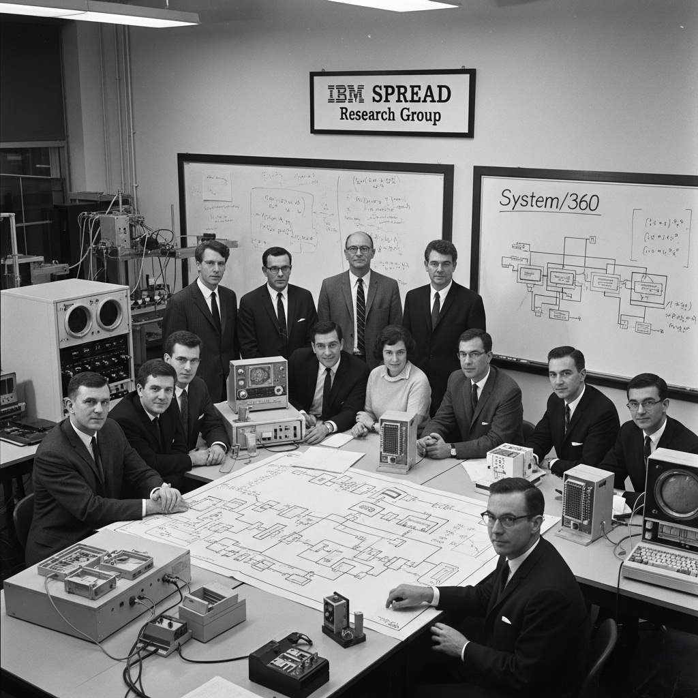
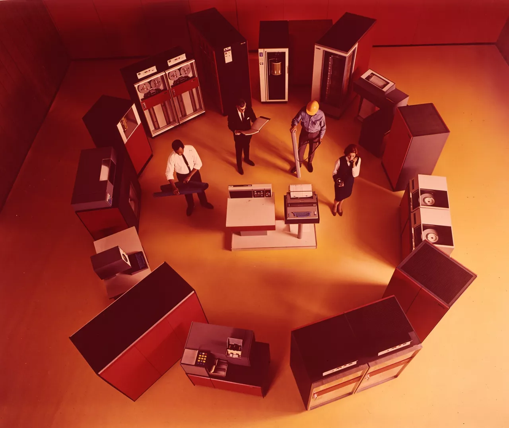

Origem da IBM
- Fundação em 1911 como CTR, unindo quatro pequenas empresas;
- Mudança para IBM em 1924, sob a liderança de Thomas J. Watson Sr;
- Destacou-se por inovação tecnológica e liderança no mercado de processamento de dados;
- Produtos iniciais focados em tabulação, balanças e relógios de ponto;
- Expansão para mainframes com a evolução da eletrônica.

O que são Mainframes?
- Computadores de grande porte para cálculos complexos e dados massivos;
- Uso inicial em bancos, universidades e órgãos governamentais;
- Confiabilidade e segurança tornaram-se seus principais diferenciais;
- Ainda utilizados hoje, processando milhões de transações por segundo.
O problema antes do System/360
- Cada linha de computadores tinha hardware e software incompatíveis;
- Programas e periféricos exclusivos não funcionavam em outros modelos;
- Clientes precisavam reescrever softwares e treinar funcionários;
- A IBM gastava mais com divisões internas do que inovando.


Uma possível solução
- Criação de uma família de computadores totalmente compatíveis;
- Possibilidade de rodar os mesmos programas em qualquer modelo;
- Empresas podiam migrar para modelos mais potentes sem refazer o software ou destartar equipamentos;
- Escalabilidade que permitia começar pequeno e crescer sem perdas.
Valor e Risco
- Investimento de 5 bilhões de dólares nos anos 1960;
- Exigiu novas fábricas, tecnologias e milhares de contratações;
- Linhas antigas seriam descartadas se o projeto falhasse;
- Sucesso poderia transformar a indústria para sempre.

O Grupo SPREAD
- Criado para unificar divisões e eliminar rivalidades internas;
- Definia arquitetura, compatibilidade e padrões de produção;
- Lideranças de destaque: Bob Evans, Fred Brooks e Gene Amdahl;
Da teoria à realidade
- SLT trouxe circuitos mais confiáveis e padronizados;
- Desenvolvimento do sistema operacional OS/360, um dos maiores desafios técnicos, com atrasos e complexidade inédita na época;
- Primeiros modelos entregues em 1965 após ajustes de produção;
- Emulação permitia rodar programas antigos sem alterações.

O Legado
- Compatibilidade de software e periféricos padronizados;
- Modularidade facilitou upgrades e manutenção;
- Arquitetura de 8 bits virou padrão mundial;
- Influenciou linguagens e sistemas usados até hoje.